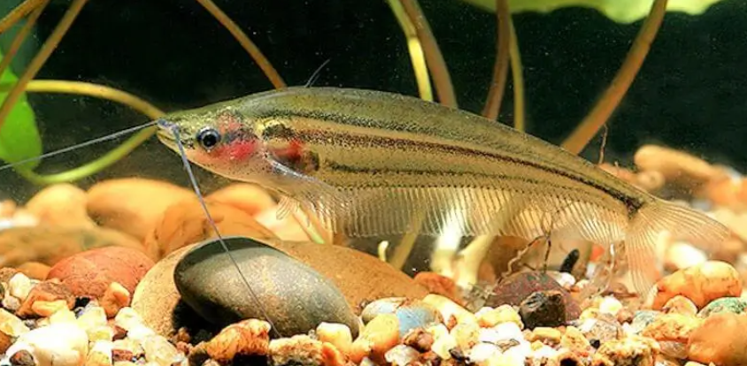
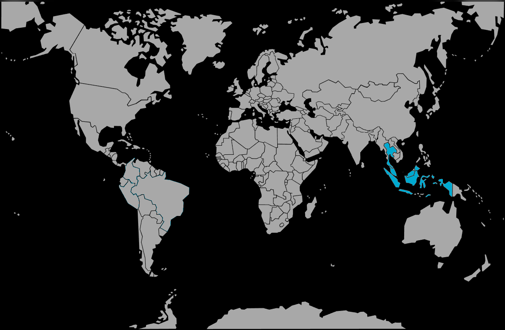

Systématique
- Ordre : Siluriformes
- Famille : Siluridae
- Genre : Kryptopterus
- Espèce : K. macrocephalus
- Syn. : Cryptopterus macrocephalus
- Groupe : Silures

Kryptopterus macrocephalus, parfois appelé Silure de verre marbré, se distingue radicalement de ses cousins transparents (*K. vitreolus*) par son apparence. Son nom d'espèce signifie "grosse tête".
Il mesure adulte entre 9 et 11 cm. Contrairement au silure de verre commun, il n'est pas transparent mais présente une coloration translucide trouble, ornée de marbrures brunes ou grisâtres et de trois bandes longitudinales sombres sur les flancs.
C'est un poisson à l'aspect assez singulier, qui arbore une paire de barbillons très longs servant à détecter ses proies dans les eaux sombres qu'il affectionne.
C'est un poisson grégaire qui doit être maintenu en groupe d'au moins 6 individus. Isolé, il devient craintif et reste caché.
Il occupe la zone médiane de l'aquarium. Bien que généralement pacifique avec les poissons de taille similaire, c'est un prédateur opportuniste doté d'une bouche assez large. Il ne doit pas être associé à de très petites espèces (alevins, micro-crevettes) qu'il pourrait avaler, surtout la nuit.
Mode : ovipare.
La reproduction en captivité est extrêmement rare et non documentée de manière fiable pour l'aquariophilie amateur. Elle serait liée aux cycles saisonniers (crues) et aux variations physico-chimiques de l'eau dans son milieu naturel.
Dimorphisme sexuel : Peu apparent. Les femelles matures sont généralement plus rebondies au niveau de l'abdomen que les mâles.
Espérance de vie : Environ 5 à 8 ans.
Il est originaire d'Asie du Sud-Est, principalement de la péninsule malaise et des grandes îles de la Sonde (Sumatra, Bornéo, Java). Il est typique des marais tourbeux et des eaux noires (blackwater), où l'eau est acide, brune (tanins) et pauvre en minéraux.
Répartition

Origine naturelle :
- Asie du Sud-Est.
- Indonésie (Sumatra, Bornéo, Java).
- Malaisie.
- Thaïlande (Sud).
Paramètres de maintenance
Température : 24 à 28 °C.
pH : 5,0 à 6,5 (espèce acidophile, nécessite une eau acide).
GH : 1 à 10 °dGH (eau douce à très douce).
Volume conseillé : Minimum 150 à 200 L. Il a besoin d'espace pour nager et d'une eau de qualité irréprochable (filtration sur tourbe recommandée).
Régime alimentaire
Régime : carnivore / insectivore.
Dans la nature, il chasse des invertébrés et de petits poissons.
En aquarium, il est gourmand. Il apprécie les proies vivantes (vers, petits poissons, larves d'insectes) et le congelé. Il accepte plus difficilement les aliments secs (paillettes) que les autres espèces du genre.